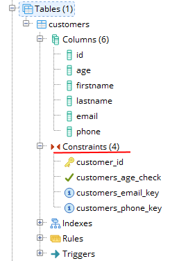

Ограничения столбцов и таблиц
При определении таблиц и их столбцов в SQL мы можем использовать ряд атрибутов, которые накладывают определенные ограничения. Рассмотрим эти атрибуты.
PRIMARY KEY
С помощью выражения PRIMARY KEY столбец можно сделать первичным ключом.
1 CREATE TABLECustomers
2 (
3 Id SERIALPRIMARY KEY,
4 FirstNameCHARACTER VARYING(30),
5 LastNameCHARACTER VARYING(30),
6 EmailCHARACTER VARYING(30),
7 AgeINTEGER
8 )
Первичный ключ уникально идентифицирует строку в таблице. В качестве первичного ключа необязательно должны выступать столбцы с типом SERIAL, они могут представлять любой другой тип.
Установка первичного ключа на уровне таблицы:
1 CREATE TABLECustomers
2 (
3 Id SERIAL
4 FirstNameCHARACTER VARYING(30),
5 LastNameCHARACTER VARYING(30),
6 EmailCHARACTER VARYING(30),
7 AgeINTEGER,
8 PRIMARY KEY(Id)
9 );
Первичный ключ может быть составным (compound key). Такой ключ может потребоваться, если у нас сразу два столбца должны уникально идентифицировать строку в таблице. Например:
1 CREATE TABLEOrderLines
2 (
3 OrderId INTEGER,
4 ProductIdINTEGER,
5 QuantityINTEGER,
6 Price MONEY,
7 PRIMARY KEY(OrderId, ProductId)
8 );
Здесь поля OrderId и ProductId вместе выступают как составной первичный ключ. То есть в таблице OrderLines не может быть двух строк, где для обоих из этих полей одновременно были бы одни и те же значения.
UNIQUE
Если мы хотим, чтобы столбец имел только уникальные значения, то для него можно определить атрибут UNIQUE.
1 CREATE TABLECustomers
2 (
3 Id SERIAL PRIMARY KEY,
4 FirstNameCHARACTER VARYING(20),
5 LastNameCHARACTER VARYING(20),
6 EmailCHARACTER VARYING(30)UNIQUE,
7 PhoneCHARACTER VARYING(30)UNIQUE,
8 AgeINTEGER
9 );
В данном случае столбцы, которые представляют электронный адрес и телефон, будут иметь уникальные значения. И мы не сможем добавить в таблицу две строки, у которых значения для этих столбцов будет совпадать.
Также мы можем определить этот атрибут на уровне таблицы:
1 CREATE TABLECustomers
2 (
3 Id SERIAL PRIMARY KEY,
4 FirstNameCHARACTER VARYING(20),
5 LastNameCHARACTER VARYING(20),
6 EmailCHARACTER VARYING(30),
7 PhoneCHARACTER VARYING(30),
8 AgeINTEGER,
9 UNIQUE(Email, Phone)
10 );
Или так:
1 CREATE TABLECustomers
2 (
3 Id SERIAL PRIMARY KEY,
4 FirstNameCHARACTER VARYING(20),
5 LastNameCHARACTER VARYING(20),
6 EmailCHARACTER VARYING(30),
7 PhoneCHARACTER VARYING(30),
8 AgeINTEGER,
9 UNIQUE(Email),
10 UNIQUE(Email)
11 );
NULL и NOT NULL
Чтобы указать, может ли столбец принимать значение NULL, при определении столбца ему можно задать атрибут NULL или NOT NULL. Если этот атрибут явным образом не будет использован, то по умолчанию столбец будет допускать значение NULL. Исключением является тот случай, когда столбец выступает в роли первичного ключа - в этом случае по умолчанию столбец имеет значение NOT NULL.
1 CREATE TABLECustomers
2 (
3 Id SERIAL PRIMARY KEY,
4 FirstNameCHARACTER VARYING(20) NOT NULL,
5 LastNameCHARACTER VARYING(20) NOT NULL,
6 AgeINTEGER
7 );
DEFAULT
Атрибут DEFAULT определяет значение по умолчанию для столбца. Если при добавлении данных для столбца не будет предусмотрено значение, то для него будет использоваться значение по умолчанию.
1 CREATE TABLECustomers
2 (
3 Id SERIAL PRIMARY KEY,
4 FirstNameCHARACTER VARYING(20),
5 LastNameCHARACTER VARYING(20),
6 AgeINTEGER DEFAULT18
7 );
Здесь для столбца Age предусмотрено значение по умолчанию 18.
CHECK
Ключевое слово CHECK задает ограничение для диапазона значений, которые могут храниться в столбце. Для этого после слова CHECK указывается в скобках условие, которому должен соответствовать столбец или несколько столбцов. Например, возраст клиентов не может быть меньше 0 или больше 100:
1 CREATE TABLECustomers
2 (
3 Id SERIAL PRIMARY KEY,
4 FirstNameCHARACTER VARYING(20),
5 LastNameCHARACTER VARYING(20),
6 AgeINTEGER DEFAULT18CHECK(Age >0 AND Age < 100),
7 EmailCHARACTER VARYING(30)UNIQUE CHECK(Email !=''),
8 Phone CHARACTER VARYING(20)UNIQUE CHECK(Phone !='')
9 );
Здесь также указывается, что столбцы Email и Phone не могут иметь пустую строку в качестве значения (пустая строка не эквивалентна значению NULL).
Для соединения условий используется ключевое слово AND. Условия можно задать в виде операций сравнения больше (>), меньше (<), не равно (!=).
Также с помощью CHECK можно создать ограничение в целом для таблицы:
1 CREATE TABLECustomers
2 (
3 Id SERIAL PRIMARY KEY,
4 AgeINTEGER DEFAULT18,
5 FirstNameCHARACTER VARYING(20),
6 LastNameCHARACTER VARYING(20),
7 EmailCHARACTER VARYING(30)UNIQUE,
8 Phone CHARACTER VARYING(20)UNIQUE,
9 CHECK((Age >0 AND Age<100) AND (Email !='') AND (Phone !=''))
10 );
Оператор CONSTRAINT. Установка имени ограничений.
С помощью ключевого слова CONSTRAINT можно задать имя для ограничений. В качестве ограничений могут использоваться PRIMARY KEY, UNIQUE, CHECK.
Имена ограничений можно задать на уровне столбцов. Они указываются после CONSTRAINT перед атрибутами:
1 CREATE TABLECustomers
2 (
3 Id SERIAL CONSTRAINTcustomer_IdPRIMARY KEY,
4 AgeINTEGER CONSTRAINTcustomers_age_checkCHECK(Age >0 AND Age < 100),
5 FirstNameCHARACTER VARYING(20) NOT NULL,
6 LastNameCHARACTER VARYING(20) NOT NULL,
7 EmailCHARACTER VARYING(30)CONSTRAINTcustomers_email_keyUNIQUE,
8 Phone CHARACTER VARYING(20)CONSTRAINTcustomers_email_keyUNIQUE
9 );
В принципе необязательно задавать имена ограничений, при установке соответствующих атрибутов SQL Server автоматически определяет их имена. Но, зная имя ограничения, мы можем к нему обращаться, например, для его удаления.
И также можно задать все имена ограничений через атрибуты таблицы:
1 CREATE TABLECustomers
2 (
3 Id SERIAL,
4 AgeINTEGER,
5 FirstNameCHARACTER VARYING(20) NOT NULL,
6 LastNameCHARACTER VARYING(20) NOT NULL,
7 EmailCHARACTER VARYING(30),
8 Phone CHARACTER VARYING(20),
9 CONSTRAINTcustomer_IdPRIMARY KEY(Id),
10 CONSTRAINTcustomers_age_checkCHECK(Age >0 AND Age < 100),
11 CONSTRAINTcustomers_email_keyUNIQUE(Email),
12 CONSTRAINTcustomers_phone_keyUNIQUE(Phone)
13 );
Вне зависимости от того, используется оператор CONSTRAINT для создания ограничений или нет (в этом случае при установке ограничений PostgreSQL сам дает им имена), мы можем просмотреть все ограничения в pgAdmin в узле базы данных в подузле :
